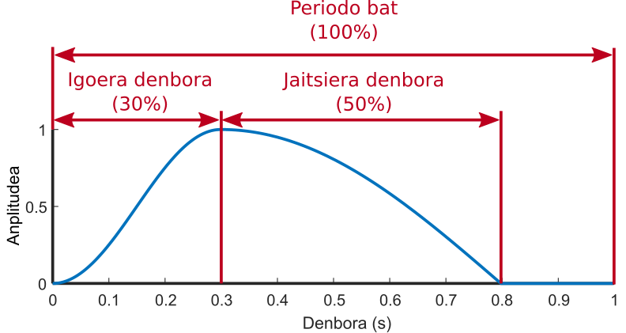

Rosenberg-en pulsua sortu
Modulo honek segundo bateko iraupeneko Rosenberg-en pulsu bat sortzen du. Anplitudea, maiztasuna, igoera-denbora eta jaitsiera-denbora hautatu ahal dira.
Interfazea

-
Aurrebista leihoa: Moduluak sortuko duen seinalea ikusteko aukera ematen du. Parametroren baten balioa aldatzean eguneratzen da.
-
Anplitude-hautagailua: Rosenber-en pulsuaren anplitudea 0 eta 1 artean aldatzea ahalbidetzen du. Balioa alda daiteke kurtsorea irristatuz edo testu-kutxaren balioa aldatuz.
-
Maiztasun-hautagailua: Rosenberg-en pulsuaren maiztasuna 1 eta 20000 Hz artean aldatzea ahalbidetzen du. Balioa alda daiteke kurtsorea irristatuz edo testu-kutxaren balioa aldatuz.
-
Igoera-denboraren hautagailua: Igoera-denbora aldatzea ahalbidetzen du, zikloaren guztizko denborarekiko proportzionalki,% 10 eta % 90 artean. Balioa alda daiteke kurtsorea irristatuz edo testu-kutxaren balioa aldatuz.
-
Jaitsiera-denboraren hautagailua: Jaitsiera-denbora aldatzea ahalbidetzen du, zikloaren guztizko denborarekiko proportzionalki,% 10 eta % 90 artean. Balioa alda daiteke kurtsorea irristatuz edo testu-kutxaren balioa aldatuz.
-
"Sortu" botoia: Beste bistaratze-leiho bat irekitzen du, hautatutako parametroak dituen seinale bat aztertzeko, segundo bateko iraupenekoa.
Rosenberg-en pulsua
Ahots sintetikoa sortzeko erabilitako pultsua da. Eredu horrekin, irekitze- eta ixte-mugimenduak egitean glotisak sortutako soinua imitatu nahi da.
The configurable parameters are as follows:
-
Anplitudea: Seinalearen gehienezko balioa da.
-
Maiztasuna: Segundo 1-ean sartzen diren ziklo kopurua, Hz-n neurtuta. (Informazio gehiago nahi izanez gero, sakatu hemen).
-
Igoera-denbora: Seinaleak minimotik maximora igotzeko behar duen denbora. Glota-irekieraren denbora irudikatzen du.
-
Jaitsiera-denbora: Seinaleak maximotik minimora jaisteko behar duen denbora. Glota-itxieraren denbora irudikatzen du.

Informazio gehiago
Maiztasuna: Denbora tarte batean seinale-ziklo oso bat zebat aldiz errepikatzen den adierazten du. Hertzetan neurrituta, segundu batean seinale-ziklo baten errepikapen kopurua.

|
| Adibide honetan maiztasuna 2 Hz-ekoa da.
|